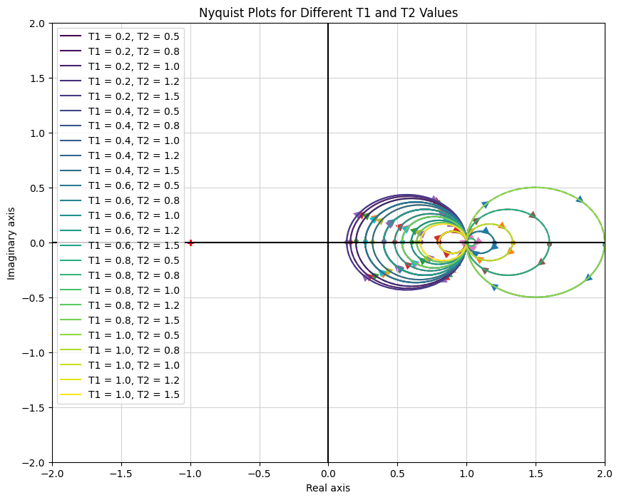
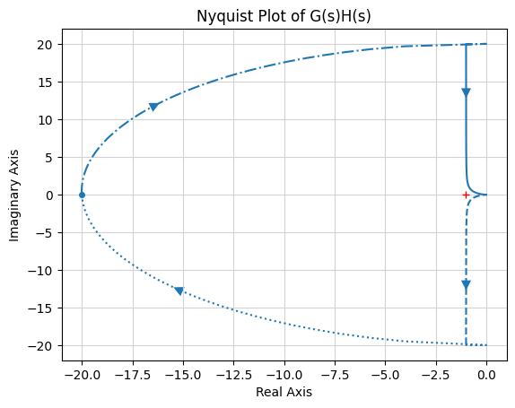

Il criterio di stabilità di Nyquist e la stabilità relativa
Introduzione alla stabilità relativa
La stabilità relativa si riferisce al grado in cui un sistema tollera i cambiamenti nei suoi parametri prima di diventare instabile. A differenza della stabilità assoluta, che ci dice semplicemente se un sistema è stabile o meno, la stabilità relativa fornisce una misura di quanto il sistema è vicino al confine dell’instabilità.
Consideriamo un grafico che rappresenta i poli del circuito chiuso sul piano sigma-jω (σ-jω). Supponiamo di avere due poli dominanti in questo sistema. Se questi poli sono più vicini all’asse jω, la risposta transitoria del sistema decade più velocemente.
Questo posizionamento dei poli rispetto all’asse jω indica la relativa stabilità del sistema.
La parte reale guida l’inviluppo della risposta oscillante.
Concetto chiave: poli dominanti e risposta transitoria
I poli dominanti sono quelli che hanno l’effetto più significativo sul comportamento del sistema.
Più questi poli sono vicini all’asse jω, più lentamente decade la risposta ai transitori, indicando una stabilità relativa più scarsa.
Transizione al dominio della frequenza
Ora interpretiamo questi concetti nel dominio della frequenza utilizzando il diagramma di Nyquist.
I grafici corrispondenti al precedente esempio del piano s potrebbero essere i seguenti (nota che questo è solo un esempio):
Esempi di grafici
Inserisci qui due grafici di Nyquist: 1. Un grafico che mostra una risposta più vicina al punto (-1, j0), indicando un sistema più vicino all’instabilità. 2. Un altro grafico che mostra una risposta più lontana dal punto (-1, j0), indicando un sistema più stabile.
Interpretazione dei grafici di Nyquist per la stabilità relativa
La vicinanza del grafico di Nyquist al punto (-1, j0) ci dà un’indicazione della relativa stabilità del sistema.
Stabilità assoluta e relativa
Racchiudere il punto (-1, j0) indica stabilità assoluta.
Più il tracciato è vicino a questo punto, maggiore è il rischio di instabilità.
Osservazione dell’impatto dell’aumento del guadagno attraverso il diagramma polare
Il diagramma polare è una rappresentazione grafica della risposta in frequenza di un sistema, che va da ω = 0 a ω = ∞.
La vicinanza del diagramma polare al punto critico (-1, j0) è indicativa del potenziale di oscillazioni o instabilità sostenute del sistema.
Aumentando il guadagno del sistema si tende a spostare il diagramma polare più vicino al punto critico (-1, j0).
Se questo grafico circonda il punto (-1, j0), è un segnale che il sistema si sta muovendo verso l’instabilità.
Valutazione della stabilità relativa utilizzando il grafico polare
La chiave per comprendere la stabilità relativa di un sistema sta nel misurare la distanza del diagramma polare (o di Nyquist) dal punto (-1, j0).
Determinare questa “distanza relativa” implica misurare quanto il grafico è vicino a (-1, j0), che a sua volta riflette la suscettibilità del sistema all’instabilità.
L’importanza dell’angolo di fase
Non solo l’intersezione con l’asse reale negativo ma anche l’angolo di fase del grafico è fondamentale per valutare la stabilità relativa.
Per misurarlo vengono spesso utilizzati due indici: il punto di intersezione sull’asse reale e l’angolo di fase nel punto in cui la grandezza è unitaria.
Indici per misurare la stabilità relativa
Magnitudo all’intersezione: viene misurata nel punto in cui il diagramma di Nyquist interseca l’asse reale negativo. Quanto più bassa è questa grandezza, tanto più stabile è considerato il sistema.
Angolo di fase: viene considerato un cerchio unitario centrato in (-1, j0). L’angolo al quale questo cerchio interseca il diagramma di Nyquist fornisce una misura della stabilità relativa.
Si può anche dire che questi due indici non sono necessariamente sufficienti. Tuttavia, forniscono un semplice algoritmo per quantificare la stabilità relativa.
Guadagno e margini di fase
Guadagna margine
Analizziamo lo scenario in cui il guadagno del sistema, indicato come \(K\), viene progressivamente aumentato. Con questo incremento di guadagno, aumenta anche la grandezza complessiva del diagramma di Nyquist. Ad un valore di guadagno specifico, il grafico interseca il punto critico di (-1, j0).
Per determinare l’esatto incremento di guadagno richiesto affinché il grafico si intersechi (-1, j0), utilizziamo il fattore \(\frac{1}{a}\). Qui, \(a\) rappresenta la distanza dell’intersezione del grafico dall’asse reale nel suo stato originale (prima dell’aumento del guadagno).
Applicando un guadagno di \(\frac{1}{a}\) al tuo diagramma polare, allinei la sua intersezione con l’asse reale esattamente nel punto -1.
Il margine di guadagno (GM) è matematicamente espresso come \[GM = \frac{1}{a}.\] Questo valore rappresenta la soglia prima che il sistema raggiunga uno stato di stabilità o instabilità marginale.
Il margine di guadagno considera il fattore di amplificazione al quale un sistema diventa instabile.
La seguente illustrazione illustra visivamente questo concetto:
Margine di fase
Per chiarire ulteriormente questo concetto, esaminiamo un esempio specifico:
Consideriamo la funzione di trasferimento:
\[
G(s) = K_1\frac{1 + sT_1}{s(1 + sT_2)}
\]
In questo caso, il numero di poli ad anello aperto nel semipiano destro, indicato come \(P\), è uguale a 0. Questo scenario corrisponde al diagramma di Nyquist mostrato di seguito:
Concentrandosi sul margine di fase, indicato come \(\phi\), analizziamo il suo significato nella stabilità del sistema:
Il margine di fase \(\phi\) rappresenta lo sfasamento aggiuntivo che può essere introdotto nel sistema senza farlo intersecare con il punto critico (-1, j0).
In sostanza, quantifica la capacità del sistema di gestire gli sfasamenti senza cadere nell’instabilità.
Quando si considera il margine di fase, un valore positivo di \(\phi\) è indicativo della robustezza del sistema.
Questo margine di fase positivo è la soglia di ulteriore ritardo di fase che, se incorporato nel sistema, lo porterebbe al limite estremo dell’instabilità, senza però passare in uno stato instabile.
La presenza di un margine di fase positivo funge da salvaguardia contro l’instabilità, dimostrando la capacità del sistema di resistere a determinati livelli di alterazioni di fase.
Margine di guadagno infinito
Considera un sistema in cui il diagramma di Nyquist diventa asintotico rispetto a una linea ma non si interseca mai. In questi casi, il margine di guadagno è considerato infinito.
Consideriamo la funzione di trasferimento:
\[
G(s) = \frac{K}{s(1 + sT)}
\]
Questa funzione ha il seguente diagramma polare, che non interseca mai il punto -1. Si avvicina asintoticamente all’asse reale per \(K\) in aumento.
Coinvolgimento:
Sebbene possa sembrare ideale, un margine di guadagno infinito spesso indica altri fattori di stabilità da considerare, principalmente il margine di fase. Il margine di fase in questo caso è più adatto per misurare la distanza dal punto -1 e si riduce quando aumentiamo \(K\).
Comprendere il guadagno e i margini di fase nei sistemi stabili a circuito aperto
È importante riconoscere che i sistemi instabili ad anello aperto non rientrano nell’ambito delle definizioni convenzionali di guadagno e margini di fase.
Questi margini sono specificamente progettati e applicabili per i sistemi che mostrano stabilità nella loro configurazione a circuito aperto.
Di conseguenza, le valutazioni del guadagno e dei margini di fase sono principalmente rilevanti e significative quando si ha a che fare con sistemi stabili ad anello aperto. Nei casi in cui il sistema è instabile a circuito aperto, queste definizioni non sono direttamente applicabili e dovrebbero essere considerati metodi alternativi di analisi della stabilità.
Sebbene la maggior parte degli impianti industriali e dei sistemi di controllo siano intrinsecamente stabili a circuito aperto, è fondamentale prestare particolare attenzione quando si incontra un sistema instabile a circuito aperto. Questo scenario, sebbene meno comune, richiede un approccio più articolato per garantire un funzionamento efficace e sicuro dell’impianto. Comprendere e affrontare le sfide uniche poste dai sistemi instabili a circuito aperto è essenziale per mantenere la stabilità e l’affidabilità del sistema.
Sistemi di tipo 0
Esploriamo un esempio specifico di un sistema di tipo 0, in cui i gradi del numeratore e del denominatore della funzione di trasferimento sono uguali.
Funzione di trasferimento:
\[
G(s)H(s) = \frac{1 + sT_1}{1 + sT_2}
\]
Questo è un sistema di tipo 0 con il seguente diagramma di Nyquist:
Analisi di stabilità: Il sistema è stabile per tutti i \(T_1\) e \(T_2\). Ciò rende le definizioni tradizionali di guadagno e margine di fase meno significative.
Possiamo mostrarlo usando Python:
import numpy as npimport matplotlib.pyplot as pltimport control as ctlimport matplotlib.cm as cm# Define the ranges for T1 and T2 valuesT1_values = np.linspace(0.2, 1, 5) # Adjust the number of values as neededT2_values = np.linspace(0.5, 1.5, 5) # Adjust the number of values as needed# Prepare a colormapnum_plots =len(T1_values) *len(T2_values)colors = cm.viridis(np.linspace(0, 1, num_plots)) # Use 'viridis' colormap# Prepare the plotplt.figure(figsize=(10, 8))plt.title('Nyquist Plots for Different T1 and T2 Values')plt.xlabel('Real Axis')plt.ylabel('Imaginary Axis')# Iterate over combinations of T1 and T2color_idx =0for T1 in T1_values:for T2 in T2_values: num = [1, T1] den = [1, T2] G = ctl.TransferFunction(num, den)# Extract real and imaginary parts _, contour = ctl.nyquist(G, omega=np.logspace(-2, 1, 1000), return_contour=True) real, imag = np.real(G(contour)), np.imag(G(contour))# Plot each curve with a label and the same color for mirror image color = colors[color_idx] plt.plot(real, imag, label=f'T1 = {T1:.1f}, T2 = {T2:.1f}', color=color) plt.plot(real, -imag, color=color) # Nyquist plot is symmetric color_idx +=1# Add legend, grid, and axis linesplt.legend()plt.grid(True)plt.axhline(y=0, color='k') # Add x-axisplt.axvline(x=0, color='k') # Add y-axisplt.xlim([-2, 2]) # Adjust x-axis limits as neededplt.ylim([-2, 2]) # Adjust y-axis limits as needed# Show the plotplt.show()

Affrontare i sistemi instabili a circuito aperto
Quando si parla di margine di guadagno e margine di fase, la loro applicazione nel contesto di sistemi instabili ad anello aperto richiede particolare attenzione.
Gestione dei sistemi instabili a circuito aperto
Caratteristiche: Si tratta di sistemi in cui uno o più poli ad anello aperto si trovano nella metà destra del piano s.
Rilevanza per i margini di stabilità: In tali sistemi, le interpretazioni convenzionali di guadagno e margine di fase non sono direttamente applicabili. Un aspetto chiave di questi sistemi è che il loro diagramma polare deve circondare il punto critico (-1+j0) un numero specifico di volte per ottenere la stabilità a circuito chiuso.
Un esempio illustrativo
Funzione di trasferimento:\[
G(s)H(s) = \frac{s + \frac{1}{2}}{s(s + 1)(s - 1)}
\] In questo caso, il grafico di Nyquist deve girare attorno al punto (-1+j0) una volta per garantire la stabilità.
Note aggiuntive: Per i sistemi instabili a ciclo aperto, vengono generalmente utilizzati grafici Nyquist completi o tecniche alternative come l’analisi del luogo delle radici. I margini di stabilità convenzionali di guadagno e fase non vengono generalmente utilizzati per valutare la robustezza di questi sistemi, poiché potrebbero non fornire informazioni chiare. In ogni caso, è necessario un approccio su misura per tenere conto degli specifici accerchiamenti nel complotto di Nyquist.
Di seguito è riportato uno script Python per visualizzare il suo complotto Nyquist.
import numpy as npimport matplotlib.pyplot as pltimport control as ctl# Define the numerator and denominator of the transfer function# G(s)H(s) = (s + 0.5) / (s*(s + 1)*(s - 1)) num = [1, 0.5]den = [1, 0, -1, 0]# Create the transfer functionG = ctl.TransferFunction(num, den)# Compute and plot the Nyquist plotctl.nyquist_plot(G)plt.title('Nyquist Plot of G(s)H(s)')plt.xlabel('Real Axis')plt.ylabel('Imaginary Axis')plt.grid(True)# Show the plotplt.show()

Comprendere le frequenze crossover
Nei sistemi di controllo, due frequenze critiche sono la frequenza di crossover del guadagno (\(\omega_{gc}\)) e la frequenza di crossover della fase (\(\omega_{pc}\)).
Queste frequenze sono importanti per determinare la stabilità e le prestazioni di un sistema.
Guadagno frequenza di crossover (\(\omega_{gc}\))
Definizione: La frequenza alla quale l’ampiezza della funzione di trasferimento ad anello aperto G(jω)H(jω) è 1 (0 dB).
Importanza: È la frequenza alla quale il guadagno del sistema è uguale all’unità.
Calcolo: Determina \(\omega_{gc}\) dal grafico Nyquist o polare dove |G(jω)H(jω)| = 1.
Frequenza di incrocio di fase (\(\omega_{pc}\))
Definizione: La frequenza alla quale l’angolo di fase di G(jω)H(jω) raggiunge -180°.
Importanza: Indica la frequenza con cui lo sfasamento del sistema potrebbe portare all’instabilità.
Calcolo: Determinare \(\omega_{pc}\) dal grafico Nyquist o polare in cui l’angolo di fase di G(jω)H(jω) è -180°.er (\(\omega_{PC}\)): ** Questa è la frequenza alla quale l’angolo di fase del sistema raggiunge -180 gradi.
Chiarimento del guadagno e dei margini di fase nei sistemi di controllo
Il margine di guadagno, indicato come $ $, è un parametro critico nella valutazione della stabilità di un sistema. È importante capire che questo margine non è direttamente il guadagno del sistema stesso. Diventa invece un guadagno solo nel contesto di un sistema la cui trama originaria è basata sul guadagno unitario. In altri casi, il margine di guadagno rappresenta il fattore mediante il quale è possibile modificare il guadagno originale del sistema.
Ulteriori commenti sul margine di guadagno
Ipotizzando un sistema stabile ad anello aperto (\(P=0\))
Per un sistema stabile, il margine di guadagno è sempre maggiore di 1.
Per un sistema instabile, il margine di guadagno è inferiore a 1.
Se il margine di guadagno è inferiore a 1, ciò implica che il guadagno del sistema è stato aumentato a un livello tale da introdurre instabilità. Per riportare il sistema ad uno stato stabile, il guadagno deve essere ridotto di questo fattore di margine.
Ulteriori commenti sul margine di fase
Il margine di fase viene determinato misurando un angolo specifico sul diagramma di Nyquist. Questo angolo rappresenta la quantità di cui è possibile aumentare la fase senza provocare instabilità.
Nei sistemi stabili a circuito aperto, un margine di fase positivo indica un buffer contro l’instabilità, mentre un margine di fase negativo è un segno di potenziale instabilità.
Ipotizzare di misurare l’angolo di margine di fase rispetto all’asse reale negativo.